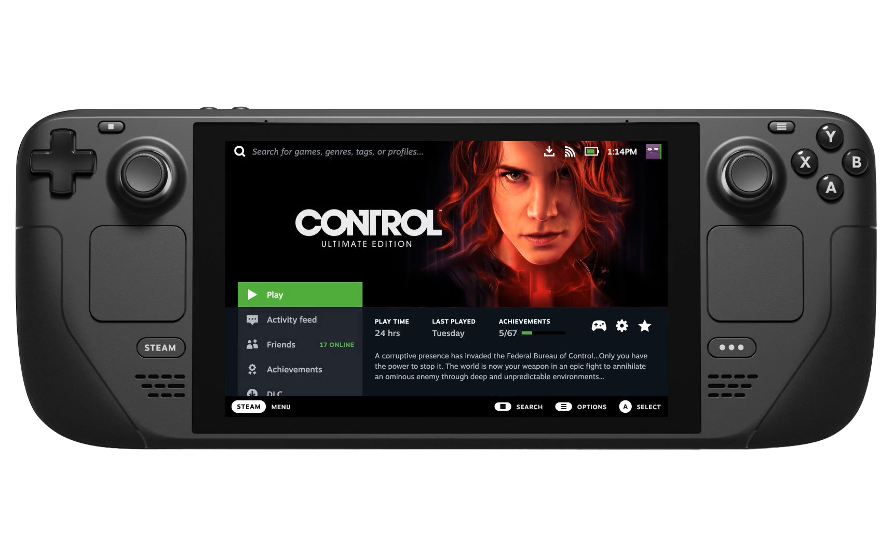

Погрузитесь в захватывающий мир игр в любом месте с нашим обзором современных портативных игровых консолей.
В этом разделе вы узнаете о лучших решениях для игры в движении, включая популярные консоли, такие как Nintendo Switch и Steam Deck. От их уникальных возможностей до захватывающего игрового опыта - давайте вместе окунемся в мир игровых консолей нового поколения! Раскроем перед вами потенциал каждой консоли, расскажем о последних инновациях, замечательных играх и том, как эти устройства формируют будущее гейминга. Будьте в курсе последних трендов, открывайте для себя новые миры развлечений и делитесь впечатлениями о нашем увлекательном путеводителе по современным портативным игровым консолям!
Доступность игр в России
Цифровые версии можно покупать на иностранные аккаунты — самостоятельно при помощи зарубежных банковских карт или через посредников, продающих готовые карты оплаты. Самые популярные новинки появляются на физических носителях, но стоят дорого.
Эксклюзивы
Все традиционные франшизы Nintendo. Хиты предыдущего года — Mario + Rabbids Sparks of Hope, Kirby and the Forgotten Land и Xenoblade Chronicles 3. Самая ожидаемая новинка 2023-го — The Legend of Zelda: Tears of the Kingdom.
Подписка
Аналога Game Pass у Nintendo нет, зато есть Switch Online с коллекцией ретроигр (19,99 доллара в год). Открывает доступ к библиотеке старых консолей Nintendo (NES, SNES, Game Boy) и онлайн-активностям. Расширенная версия Nintendo Switch Online + Expansion Pack (49,99 доллара) добавляет к старым Nintendo 64 и Game Boy Advance, плюс дополнения к некоторым эксклюзивам Switch.
Мощность и фишки
Технически Switch уже устарела (это самая пожилая консоль из подборки — релиз состоялся в 2017 году), но на ней хорошо работают эксклюзивы самой Nintendo и нетребовательные инди-игры сторонних разработчиков. Главная особенность — возможность использования не только в портативном режиме (ее легко взять в путешествие), но и в формате домашней приставки. Switch можно вставить в док-станцию (входит в комплект), которая выводит изображение на телевизор. А джойконы — так называются фирменные контроллеры по обе стороны портативного экрана — можно вставить в специальную подставку и превратить в полноценный геймпад. Правда, на большом мониторе или телевизоре изображение, скорее всего глаз, не порадует: никакого 4К Switch не поддерживает, придется довольствоваться устаревшим 1080р.
У устройства также доступно несколько версий. Самая дешевая (Lite) не позволяет снимать джойконы и подключать консоль к телевизору — это полностью портативная Switch. А более дорогая версия (OLED) работает как обычная Switch, но может похвастаться куда более ярким и качественным экраном.
Итоги
Самая популярная игровая система в мире прямо сейчас — Switch, которая продалась тиражом более 122 млн копий. Почему? Во-первых, это самая дешевая современная консоль, то есть она становится удобной точкой входа в игры, например, для детей или тех, кто не хочет тратить суммы вдвое, а то и втрое больше на приставки Microsoft и Sony. Во-вторых, Nintendo работает с франшизами, которые знают многие, — от Mario до Pokemon. Эксклюзивы Switch достаточно легки в освоении, так что это максимально доступная платформа для широкого круга людей.
Стоит ли покупать Switch в 2023 году? Nintendo доминирует в жанре платформера, в семейных играх и развлечениях для вечеринок. Так что ее стоит брать в том случае, если вам близко что-то из этого или вы часто проводите время в разъездах и хотите иметь под рукой консоль. В ином случае мы советуем присмотреться к аппаратам Microsoft и Sony, которые стоят дороже, зато не устареют намного дольше. Switch, если верить активно появляющимся слухам, скоро перестанет быть главной консолью Nintendo. Компания якобы готовит ей на замену Pro-версию или же условную Switch 2.
Nintendo Switch
Nintendo Switch - уникальная гибридная игровая консоль, которая позволяет вам играть как дома, так и в пути. С широкой библиотекой эксклюзивных игр от Nintendo, таких как "The Legend of Zelda: Breath of the Wild" и "Super Mario Odyssey", и съемными контроллерами, Nintendo Switch предлагает разнообразные игровые возможности. Это идеальная консоль для семейного развлечения.
Доступность игр в России
Игры приобретаются в популярном цифровом магазине Steam для ПК. Российскими картами заплатить не получится, поэтому в ход идут смена региона, иностранные карты и другие народные методы.
Эксклюзивы
Грубо говоря, их нет. Steam Deck — это всего лишь портативный ПК в компактной оболочке. С другой стороны, на какой еще платформе вы сможете запустить Excel, поднять сервер Minecraft или установить практически любой эмулятор.
Подписка
Valve по-прежнему не запустила свой аналог Game Pass.
Мощность и фишки
Steam Deck представляет собой мощную портативную игровую консоль с внушительной вычислительной мощностью, которая поднимает гейминг на новый уровень. Снабженная процессором AMD Zen 2 и графикой RDNA 2, эта консоль способна обеспечивать высокий уровень производительности для запуска самых требовательных игр. Однако мощность - это не единственное преимущество Steam Deck. Она также оснащена 7-дюймовым сенсорным дисплеем с разрешением 1280 x 800 пикселей, что обеспечивает яркое и четкое изображение в любых условиях. Интересной особенностью является наличие удобных геймпадов, аналогичных тем, что мы привыкли видеть на домашних консолях, что делает управление играми еще более приятным и интуитивным.
Но у Steam Deck немало минусов: консоль достаточно тяжелая, ее активное охлаждение может быть шумным, а экран заметно уступает Switch OLED: у него низкая контрастность, и он не лучшим образом показывает себя на солнце. С другой стороны, на Valve можно с высокой производительностью играть в инди и большинство ААА-игр поколений PS3/PS4. Возможность перепройти DmC или Mad Max где-нибудь в дороге? С новинками ситуация чуть сложнее, но Deck уже настолько популярен, что его поддержку в некоторых тайтлах добавляют прямо в день релиза.
Итоги
В ААА-играх Steam Deck достаточно быстро разряжается, но зато из него получается идеальная инди- или ретромашина. Однако во многом эта система даже не для тех, кто постоянно находится в дороге, а для тех, кто любит поиграть в кровати перед сном. Главная причина пока что повременить с покупкой Steam Deck — это возможный скорый релиз второй версии. И чем больше проходит времени, тем выше шанс долгожданного анонса. Более мощная и тихая версия Deck с OLED-экраном будет просто убийственным предложением.
Steam Deck
Steam Deck - инновационная портативная игровая консоль, разработанная для тех, кто жаждет неограниченной свободы в мире гейминга. Steam Deck представляет собой уникальное устройство, объединяющее в себе мощь игрового ПК и портативную консоль, позволяя вам наслаждаться вашими любимыми играми где угодно и когда угодно.